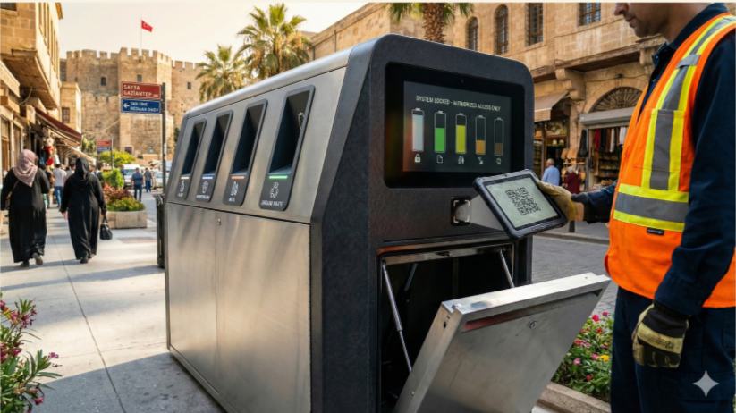

Sahadaki Gücümüz
Teknoloji ve emeği birleştirerek Gaziantep sokaklarını dönüştürüyoruz.
Tanıtım Filmi
Farkındalık Hareketi
Şehrin kalbinde, tramvay giydirmeleri ve meydan sergileriyle geri dönüşüm emekçilerinin görünürlüğünü artırıyoruz.

Dönüşüm Yuvası
Eğitim, üretim ve sosyalleşme merkezi.

Akıllı Atık Kutusu
Puan kazandıran yeni nesil teknolojik kutular.

Modern Araç Filosu
Çevre dostu ve hijyenik toplama araçları.

Adil Çalıştırma Sertifikası
İşçi haklarını güvence altına alan standartlar.